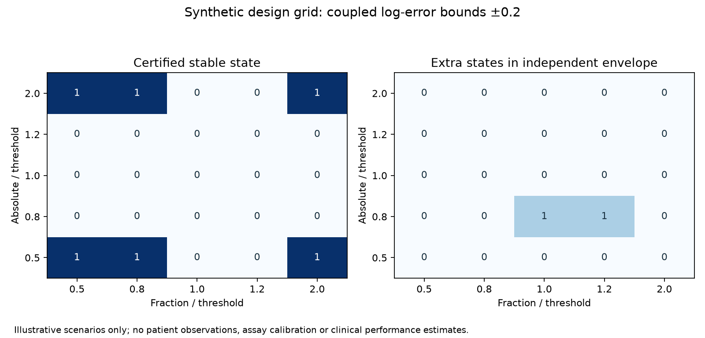

03 / Hypothetical uncertainty experiment
When does a diagnostic classification stay the same?
This research-methods extension examines the robustness of four classification states under explicit uncertainty. It builds on the published-cohort comparison; it does not reinterpret that cohort as patient-level measurements.
Hypothetical scenarios. Inputs below are ratios to illustrative thresholds. They are not patient measurements. Error bounds are assumptions, not validated assay precision or probabilities of rejection.
Explore the design space
For example, ±0.2 on a natural-log scale multiplies a quantity by approximately 0.82–1.22. It is not a 20% coefficient of variation. The convention here assigns threshold equality to the high group.
Attainable classifications
What if coupling is ignored?
An independent rectangle with the same marginal bounds can permit states excluded by the shared-error model. A possible state is not necessarily probable.
See the measurement relationship
━ Coupled model ┄ Independent envelope ● Baseline pair
Both axes use a logarithmic scale; 1 means the threshold. The blue region follows the calculated-concentration relationship. The independent rectangle keeps the same marginal bounds but ignores shared error. Degenerate regions can be a line or point. Region area is not a probability.
The narrow research question
Does ignoring the shared fraction error overstate the attainable discordance states, and do molecular associations remain reproducible when instability is considered? The first question is explored with exact bounded geometry and synthetic grids here. The molecular question awaits matched measurements and biopsy-expression data.
T′ = T × exp(eT)
D′ = D × exp(eF + eT)
eF ∈ [−a,a], eT ∈ [−b,b]
This model applies to calculated absolute concentration D = F × T, with F expressed as a proportion. Ratios in the explorer use an illustrative 1% fraction threshold and unit absolute threshold. Fraction remains at most 100%. Assays with independently measured concentration require a separately specified error model.
Reproducible scenario experiment

A fixed 5 × 5 ratio grid, repeated at four uncertainty bounds, is included in the repository. The figure uses a=b=0.2. These design points do not represent a clinical population.
How this connects to molecular biology
The planned analysis uses externally specified gene modules, training-only normalization, patient-separated validation, continuous identifiable predictors, and patient-cluster uncertainty intervals. It will test associations rather than claim that a threshold label contains information beyond its two input measurements.
Current evidence boundary: GSE305222 lists 604 expression samples, but the inspected standard metadata lack matched numeric fraction/concentration and patient IDs. No molecular association, clinical improvement, or external validation result is presented.